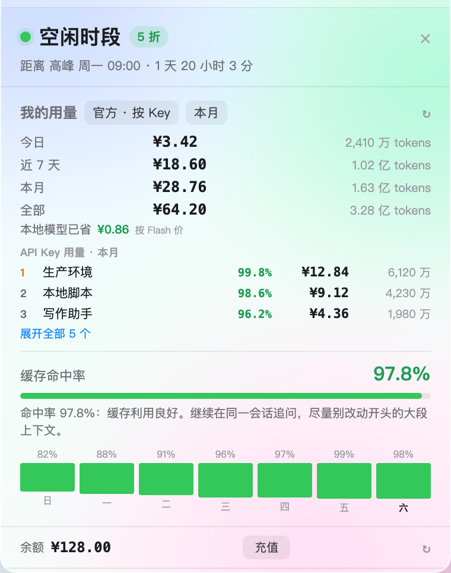

绿灯 · 空闲 5 折
橙灯 · 高峰标准价
红灯 · 余额不足
瞄一眼，就知道现在该不该跑
绿色空闲、橙色高峰、红色余额不足。状态圆环还支持经典 / 柔和 / 浅色三种配色，在设置里随手切换。
不用打开网页，也不用登录后台。菜单栏里一个 18pt 小圆环，瞄一眼就知道现在是不是高峰、 今天花了多少、余额还够不够。DeepSeek 官方多账号、OpenCode、Ollama 和自定义来源，统一收进一个面板。

DeepSeek 的高峰 / 空闲、价格、缓存命中率、余额和总花费按官方口径统计；OpenCode 里的其他模型、Ollama 本地模型和自定义来源也能一起看。更多平台正在适配。
先把所有来源的用量和花费收进一个面板，再告诉你哪里能省。
绿色空闲、橙色高峰、红色余额不足。状态圆环还支持经典 / 柔和 / 浅色三种配色，在设置里随手切换。
按命中 ÷（命中 + 未命中）算缓存命中率，附上预测输入均价和优化建议：少频繁新建会话、别反复改开头、把稳定内容放前面。
不登录也能用；Token 只存本机 600 权限文件，不上传用量、文件或账号数据。需要换机时再用 iCloud 加密备份。
不打开网页、不登录后台，点一下菜单栏就能看到今天、这周、这个月到底花了多少。
每个账号独立 Token、用量、余额和总花费；只要登录，花费就自动计入总花费，不用逐个勾选。
OpenCode 全部 / DeepSeek / Ollama / 自定义 App，以及本地 JSONL 来源，都在同一个面板里切换。
本月按自然月统计，每月 1 日归零；四个区间同时展示，不用自己算 30 天。
官方账号、OpenCode、本地来源和手动记录统一合计；环形图按来源拆分，OpenCode 的 DeepSeek 部分自动去重。
按官方口径算命中率，附预测输入均价和能直接照做的优化建议，帮你看清哪里在重复花钱。
菜单栏圆环随状态变色，点开显示距离下次切换的倒计时，不用记官方的时段规则。
余额偏低时状态灯变红，充值按钮直达官方页面；不用打开网页反复查。
Flash / Pro 的空闲与高峰价可以直接改，也可以粘贴官方价格页网址自动识别，识别失败仍可手填。
账号 Token 用 AES-GCM 加密，价格、设置和本地来源一起备份；支持每天自动备份和命令行恢复。
面板是半透明磨砂玻璃，跟随系统或手动切换浅色 / 深色；右键菜单也跟随系统外观。
一次性记录或每月订阅都能加，订阅从开始月份累计，统一进入总花费。
MIT 协议，Apple Silicon / Intel / Windows 都能用；不登录也能查看 OpenCode 和自定义来源。
当前版本 macOS 1.5 · Windows 1.3。安装包免费，MIT 开源；macOS 版约 4 MB，Windows 版内置 Chromium，约 153 MB。
安装包使用 ad-hoc 签名，没有 Apple 公证 / Windows 代码签名。macOS 请右键 App → 打开；Windows 如遇 SmartScreen，点「更多信息 → 仍要运行」。macOS 打不开？查看打开说明 →
点击卡片里的校验值可复制 SHA-256。macOS 可用 shasum -a 256 文件名，Windows 可用 certutil -hashfile 文件名 SHA256。
macOS：打开 DMG，把「TokenPeek」拖进 Applications。也可以解压 ZIP 后拖入。
Windows：解压 ZIP，把文件夹放到任意位置，双击 DeepSeekDashboard.exe。
macOS：右键 App → 打开 → 再点「打开」；或执行 xattr -dr com.apple.quarantine "/Applications/TokenPeek.app"。打不开？看详细说明
Windows：SmartScreen 提示时点「更多信息」→「仍要运行」。
点菜单栏 / 托盘的图标。用 OpenCode 的会自动读取本机数据库；要看官方账户，点「登录官方账户」获取 Token。
没有 OpenCode 也能用「自定义 App」上报，或直接查看时段与用量。
不收费。代码以 MIT 协议开源，安装包免费下载，所有功能都可以直接使用；赞赏完全自愿。
不会。用量从本机 OpenCode 数据库或本地来源读取，费用在本机计算；官方 Token 只保存在本机文件里。除了主动请求官方定价页和官方用量接口，不发送任何个人数据。iCloud 备份是可选的，且会加密。
不登录也能用：OpenCode 模式、时段、用量统计和自定义上报都可用。macOS 的「官方」模式需要网页登录 Token，用来读取所有客户端、所有 API Key 的官方用量与余额；可以添加多个账号。
「本月」按自然月统计，每月 1 日从零开始；「近 7 天」是包含今天在内的 7 个自然日；「全部」是本机数据库里的全部记录。官方模式的「全部」受接口限制，显示最近 30 天。
DeepSeek 官方账号（可多个）、OpenCode 的 DeepSeek / Ollama / 其他模型、自定义 App 上报、本地 JSONL 来源。Flash / Pro 按官方口径统计，本地模型单独列出，不混入云端用量。
所有已登录官方账号的历史累计 + OpenCode / 自定义 / 本地来源 + 手动记录。官方账号存在时，OpenCode 的 DeepSeek 部分会自动排除，避免重复计算。
Windows 版基于 Electron，自带 Chromium 运行时，因此压缩包约 153 MB。好处是免安装、不依赖 .NET 或 Node，解压双击就能用。
下载新版本覆盖旧 App 即可。设置、缓存、自定义用量都在系统数据目录（macOS：~/Library/Application Support/DeepSeekCost；Windows：%APPDATA%\DeepSeekCost），不会随 App 删除。
BlankTop：把不常用的菜单栏图标收起来，需要时再展开。更多作品和联系方式在另一个页面。